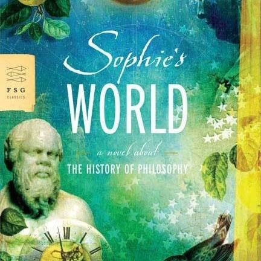
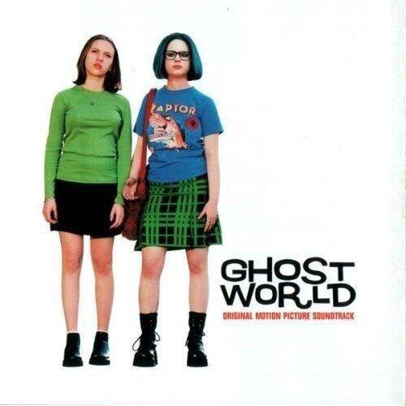
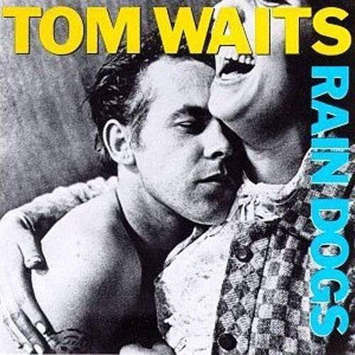

One Book, One Movie, and One Album That I Think Everyone Should Read, Watch, and Hear
This list is impossible but here goes.
-

Book: Sophie's World by Jostein Gaarder
Trying to pick a book is like trying to choose which breath was most important to you. Some were exhilarating. Some felt life saving. Some were difficult, even painful. All of them were necessary. I picked this one because it is a favorite but I don't think I've listed about it before, it is easy and approachable enough for anybody to read at almost any age, and if you're even passively interested in western thought and what it means to be human this book will thrill you. As a bonus it is sweet.
-

Movie: Ghost World
I have a few favorite movies but Ghost World is one of the best, and the one you're least likely to have seen. Hilarious, dark, sad, touching, and maybe hopeful, with themes of self discovery, self hatred, the appeal and dangers of cynicism, and finding a place for your true self in a world that doesn't leave a lot of room for unbridled expression, and doesn't always give us much to hope for. It is so moving it hurts, and the lead Enid is played by Thora Birch with unqualified perfection.
-

Album: Tom Waits / Rain Dogs
Every Tom Waits album really. And John Prine. And James McMurtry. And Iris Dement. And and and. But king of them all is Tom Waits and if I had to pick one of his albums, this would be it. Powerful, irreverent, harrowing, magical, gritty, humorous, all soaked in bourbon and agony.